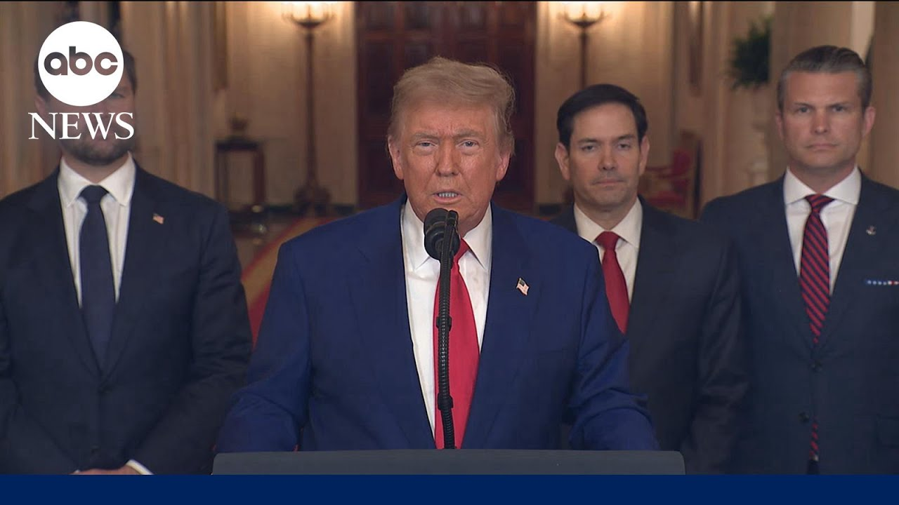

【美国对伊朗的袭击是“惊人的军事成功”，特朗普称】
Summary: The U.S. conducted precision strikes on Iran's key nuclear facilities, destroying its enrichment capacity and stopping its nuclear threat, which Trump called a military success, warning Iran to seek peace or face greater attacks.
摘要： 美国对伊朗关键核设施实施精准打击，摧毁其核浓缩能力并阻止其核威胁，特朗普称此为军事成功，并警告伊朗要么寻求和平，要么面临更严重的打击。

⏱️ Estimated Reading Time: 16 min
📚 六级生词 📚 雅思生词 📚 托福生词 📚 专八生词 📚 SAT生词 📚 考研生词 📚 GRE生词 📚 高考生词
A short time ago, the U.S. military carried out massive precision strikes on the three key nuclear facilities in the Iranian regime, Fordot, Natanz, and Esfahan.
不久前，美军对伊朗政权的三个关键核设施——福尔多、纳坦兹和伊斯法罕——实施了大规模精准打击。
Everybody heard those names for years as they built this horribly destructive enterprise.
多年来，人们一直听到这些名字，因为它们建立了这个极具破坏性的事业。
Our objective was the destruction of Iran's nuclear enrichment capacity and a stop to the nuclear threat posed by the world's number one state sponsor of terror.
我们的目标是摧毁伊朗的核浓缩能力，并阻止这个全球头号恐怖主义支持国构成的核威胁。
Tonight I can report to the world that the strikes were a spectacular military success.
今晚，我可以向全世界报告，这次打击是一次惊人的军事成功。
Iran's key nuclear enrichment facilities have been completely and totally obliterated.
伊朗的关键核浓缩设施已被彻底摧毁。
Iran, the bully of the Middle East, must now make peace.
伊朗，这个中东的恶霸，现在必须寻求和平。
If they do not future attacks, we'll be far greater and a lot easier.
如果他们不这样做，未来的打击将会更猛烈、更容易。
For 40 years Iran has been saying death to America, death to Israel.
40年来，伊朗一直在喊“美国去死，以色列去死”。
They have been killing our people, blowing off their arms, blowing off their legs with roadside bombs.
他们一直在杀害我们的人民，用路边炸弹炸断他们的手臂和腿。
That was their specialty.
这是他们的专长。
We lost over a thousand people and hundreds of thousands throughout the Middle East and around the world have died as a direct result of their hate in particular.
我们损失了上千人，而整个中东乃至全世界有数十万人死亡，尤其是因为他们仇恨的直接后果。
So many were killed by their general, Kasim Soleimani.
许多人被他们的将军卡西姆·苏莱曼尼杀害。
I decided a long time ago that I would not let this happen.
我很久以前就决定不会让这种事继续发生。
It will not continue.
这不会再继续。
I want to thank and congratulate Prime Minister BB Netanyahu.
我要感谢并祝贺本杰明·内塔尼亚胡总理。
We worked as a team like perhaps no team has ever worked before.
我们作为一个团队合作，可能前所未有。
And we've gone a long way to erasing this horrible threat to Israel.
我们在消除对以色列的这一可怕威胁方面取得了重大进展。
I want to thank the Israeli military for the wonderful job they've done.
我要感谢以色列军队所做的出色工作。
And most importantly, I want to congratulate the great American patriots who flew those magnificent machines tonight.
最重要的是，我要祝贺今晚驾驶这些出色机器的伟大美国爱国者们。
And all of the United States military on an operation, the likes of which the world has not seen in many, many decades.
以及参与这次行动的全体美军，这是世界几十年来未曾见过的行动。
Hopefully we will no longer need their services and this capacity.
希望我们不再需要他们的服务和这种能力。
I hope that so.
我希望如此。
I also want to congratulate the chairman of the Joint Chiefs of Staff, General Dan Raisin-Kane, spectacular general, and all of the brilliant military minds involved in this attack.
我还要祝贺参谋长联席会议主席丹·雷辛-凯恩将军，这位杰出的将军，以及参与这次袭击的所有杰出军事人才。
With all of that being said, this cannot continue.
尽管如此，这不能再继续。
There will be either peace or there will be tragedy for Iran far greater than we have witnessed over the last eight days.
要么实现和平，要么伊朗将面临比过去八天更严重的悲剧。
Remember, there are many targets left.
记住，还有很多目标未被打击。
The night was the most difficult of them all by far, and perhaps the most lethal.
今晚的行动是迄今为止最困难的，也可能是最致命的。
But if peace does not come quickly, we will go after those other targets with precision, speed and skill.
但如果和平未能迅速到来，我们将以精准、速度和技巧打击其他目标。
Most of them can be taken out in a matter of minutes.
大多数目标可以在几分钟内被摧毁。
There's no military in the world that could have done what we did tonight, not even close.
世界上没有任何军队能做到我们今晚所做的，甚至接近都不可能。
There's never been a military that could do what took place just a little while ago.
从未有军队能完成刚刚发生的事情。
Tomorrow, General Kane, Secretary of Defense, Pete Higgseth will have a press conference at 8 a.m. at the Pentagon.
明天早上8点，凯恩将军和国防部长皮特·希格斯将在五角大楼举行新闻发布会。
And I want to just thank everybody.
我只想感谢所有人。
And in particular, God, I want to just say we love you, God, and we love our great military.
尤其是上帝，我想说我们爱你，上帝，我们也爱我们伟大的军队。
I want to protect them.
我想保护他们。
God bless the Middle East, God bless Israel, and God bless America.
上帝保佑中东，上帝保佑以色列，上帝保佑美国。
Thank you very much.
非常感谢。
Thank you.
谢谢。
President Trump there at the White House Vice President JD Vance, Secretary of State Marco Rubio also serving as his National Security Advisor along with Defense Secretary Pete Higgseth right there with President Trump announcing to the nation.
特朗普总统在白宫，副总统JD·万斯、国务卿马可·鲁比奥（同时担任国家安全顾问）以及国防部长皮特·希格斯与他一起向全国宣布。
Similar to what he said in his post on social media not long ago that the U.S. is now directly involved with Iran striking three nuclear locations, Fordone, Atons and Esfahan, three nuclear facilities if the U.S. had long been studying as well as international observers around the world in tracking Iran's nuclear program and their desire perhaps one day to have a nuclear weapon.
与他不久前在社交媒体上的帖子类似，美国现在直接参与了对伊朗三个核设施——福尔多、纳坦兹和伊斯法罕的打击，这些设施是美国及国际观察者长期追踪伊朗核计划及其可能拥有核武器野心的目标。
And I'm going to bring in Mary Bruce.
我将请玛丽·布鲁斯加入讨论。
Let's go back to Mary at the White House.
让我们回到白宫的玛丽。
Mary, the President had warned Iran come to the table.
玛丽，总统曾警告伊朗回到谈判桌。
Let's negotiate some sort of a peace deal that this current conflict must end.
让我们谈判某种和平协议，结束当前的冲突。
At last word, he said two weeks would be his deadline.
最后他说两周将是他的最后期限。
We know that's turned out to be two days.
我们知道结果变成了两天。
We'll learn in the hours and days to come whether that was part of the strategy here.
我们将在未来几小时或几天内了解这是否是战略的一部分。
This is a fairly risky move for this president.
对这位总统来说，这是一个相当冒险的举动。
Though tonight he says it's been a victory.
尽管今晚他表示这是一场胜利。
He thanked U.S. forces who were involved and he said if Iran does not end the wars and seek peace, tragedy for Iran will be even greater than what we've seen in the last 24 hours.
他感谢了参与行动的美国军队，并表示如果伊朗不结束战争并寻求和平，伊朗的悲剧将比过去24小时更严重。
I believe it is an extremely risky move and no one knows really where this goes from here.
我认为这是一个极其冒险的举动，没有人真正知道接下来会怎样。
Look, the president we know has long warned that Iran cannot get a nuclear weapon, but he also long was pushing for those negotiations.
我们知道总统长期以来一直警告伊朗不能拥有核武器，但他也长期推动谈判。
As you mentioned, it was just two days ago that the president announced after yet another meeting in the situation room that he was going to give himself this two week deadline within which to make this decision whether or not to strike Iran.
正如你所提到的，就在两天前，总统在战情室又一次会议后宣布，他将给自己两周的最后期限来决定是否打击伊朗。
It was part because he thought there was a quote, a substantial chance of negotiations that they would be able to get Iran back to the table.
部分原因是他认为谈判有“相当大的机会”能让伊朗回到谈判桌。
It is not clear still even after hearing from the president just now what changed his mind, what led him to believe there was no time left to waste that the U.S. had to go ahead and get deeply involved in this conflict.
即使在刚刚听到总统的讲话后，仍不清楚是什么改变了他的想法，是什么让他认为没有时间可以浪费，美国必须深入参与这场冲突。
In a way that the president has also really promised the American people he would not.
某种程度上，总统曾向美国人民承诺他不会这样做。
He campaigned on a promise to be a peacemaker and a unifier to keep America out of these kinds of conflicts.
他在竞选时承诺成为和平缔造者和团结者，让美国远离这类冲突。
What is clear tonight is that the president is very much leaving open the door that there will be more of this while he is hailing the strikes tonight as a huge success.
今晚清楚的是，总统在称赞这次打击是巨大成功的同时，也敞开了进一步行动的大门。
He is also not ruling out additional military action saying that there are many targets left that they will act with precision, speed and skill if needed.
他也没有排除进一步的军事行动，称还有很多目标未被打击，如果需要，他们将精准、迅速且熟练地行动。
How all of this will ultimately end Iran's nuclear program is a huge question.
这一切将如何最终终结伊朗的核计划是一个重大问题。
And of course, David Iran has promised a severe response if the U.S. were to be directly involved as we now are.
当然，大卫，伊朗已承诺如果美国直接参与（正如我们现在所做的），将作出严厉回应。
And one quick follow up to what you are reporting here, Mary.
玛丽，对你报道的内容快速跟进一下。
Obviously you are watching ABC News Live coverage at this hour.
显然你正在观看ABC新闻的实时报道。
The president just addressing the nation talking about the U.S. striking three Iranian nuclear sites.
总统刚刚向全国发表讲话，谈到美国打击了伊朗的三个核设施。
The president calling it a tremendous success speaking briefly with our John Carl earlier this evening before addressing the nation about this.
总统称其为巨大成功，今晚在向全国发表讲话前曾与我们的约翰·卡尔简短交谈。
And Mary, you have covered President Trump for some time.
玛丽，你报道特朗普总统已有一段时间。
You have covered him as a candidate.
你曾报道他作为候选人的时期。
His promises not to engage in the Middle East and in any more foreign wars.
他承诺不卷入中东和任何更多外国战争。
At the same time, he has long promised that Iran would not get a nuclear weapon.
同时，他长期承诺伊朗不会拥有核武器。
And David, you know, just again two days ago, the White House wall saying that they were giving themselves this two week timeline again stressed that Iran was very close to getting a nuclear weapon saying that Iran had everything it needed to achieve a nuclear weapon and that once the Supreme Leader gave the go ahead.
大卫，你知道，就在两天前，白宫再次强调他们给自己两周的时间线，并再次强调伊朗非常接近拥有核武器，称伊朗已具备拥有核武器的一切条件，一旦最高领袖批准。
That it could be just a few weeks before Iran had that full capability.
可能只需几周伊朗就能具备完全能力。
Clearly something changed in the president's calculus to make him go ahead and make this decision tonight.
显然，总统的考量发生了变化，促使他今晚做出这一决定。
It is a remarkable turn for a president who has avoided getting dragged into these kind of conflicts.
对于一位避免卷入此类冲突的总统来说，这是一个显著的转变。
And it is one that his presidency, it will now define that is for sure.
这将成为他总统任期的决定性事件，这一点是肯定的。
Our chief White House correspondent Mary Bruce with us live here tonight.
我们的白宫首席记者玛丽·布鲁斯今晚与我们连线。
Mary, thank you.
玛丽，谢谢。
I want to bring in John Carl our chief Washington correspondent John.
我想请我们的华盛顿首席记者约翰·卡尔加入讨论。
I was struck that you were able to connect with the president even before he addressed the nation tonight.
令我印象深刻的是，你甚至在总统今晚向全国发表讲话前就与他取得了联系。
Again, he was confident with what he had witnessed what he'd been briefed on following this operation and made it clear to the American people that all of the US military involved in this operation is back out of that air space and on their way home.
他对自己所目睹的和行动后的简报充满信心，并向美国人民明确表示，参与此次行动的所有美军已撤离该空域并正在返航。
I think the most significant thing is I called him, I mean really David just in the aftermath of learning about these attacks within an hour of his speech that we just saw and he picked up the phone.
我认为最重要的是我给他打了电话，大卫，就在我们刚刚看到他的演讲后一小时内得知这些袭击的消息后，他接了电话。
That was a measure of how eager he was to tout what he said in those words he said to me a tremendous success tonight.
这反映了他多么渴望宣扬他所说的，他对我说今晚是一次巨大成功。
I want to talk about the details of the operation about the very difficult questions David of what are the next steps what happens with Iran.
我想谈谈行动的细节，以及非常困难的问题，大卫，关于下一步是什么，伊朗会发生什么。
What happens with Iran's efforts to retaliate we heard some of that in the speech just now when he said the attacks will be far greater and much easier if Iran does anything to the United States.
伊朗的报复努力会怎样，我们在刚才的演讲中听到了一些，他说如果伊朗对美国采取任何行动，打击将会更猛烈、更容易。
David we are in a new phase here right now I think it is without question the most consequential decision that we have ever seen Donald Trump make and it's entirely unclear what direction it will go will it be consistent with his promise to end the forever wars.
大卫，我们现在进入了一个新阶段，我认为这无疑是特朗普做出的最具影响力的决定，完全不清楚它将走向何方，是否会与他结束“永久战争”的承诺一致。
That is the argument that is being made tonight by the President's advisors they are saying that what this has done is finally an American president has taken care of an Iranian threat that has be deviled the United States for nearly a half a century.
这是总统顾问今晚提出的论点，他们说这次行动终于让一位美国总统解决了困扰美国近半个世纪的伊朗威胁。
Finally an American president has ended a threat that has killed a lot of Americans as you heard the President mentioned in the attacks on American troops especially in Iraq.
正如你听到总统提到的，尤其是在伊拉克对美国军队的袭击中，终于有一位美国总统终结了一个杀害了许多美国人的威胁。
But the question is did it end the threat or did it create another new and more dangerous chapter in the U.S. Iran conflict.
但问题是，它是终结了威胁，还是为美伊冲突开启了另一个更危险的新篇章。
No question it is a new chapter John Carl bottom line here the willingness to get on the phone with you signal that the President was very pleased with the outcome of this operation tonight.
毫无疑问，这是一个新篇章，约翰·卡尔，关键在于他愿意接你的电话，表明总统对今晚行动的结果非常满意。
It is very pleased with the outcome and eager to tell people that he is very pleased with the outcome tonight.
他对结果非常满意，并渴望告诉人们他对今晚的结果非常满意。